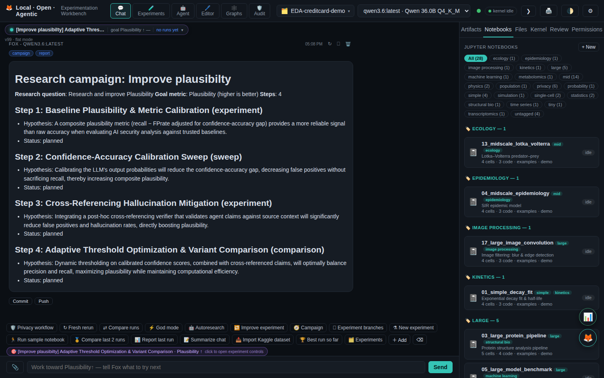
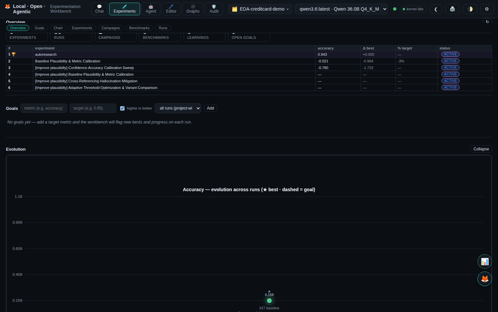
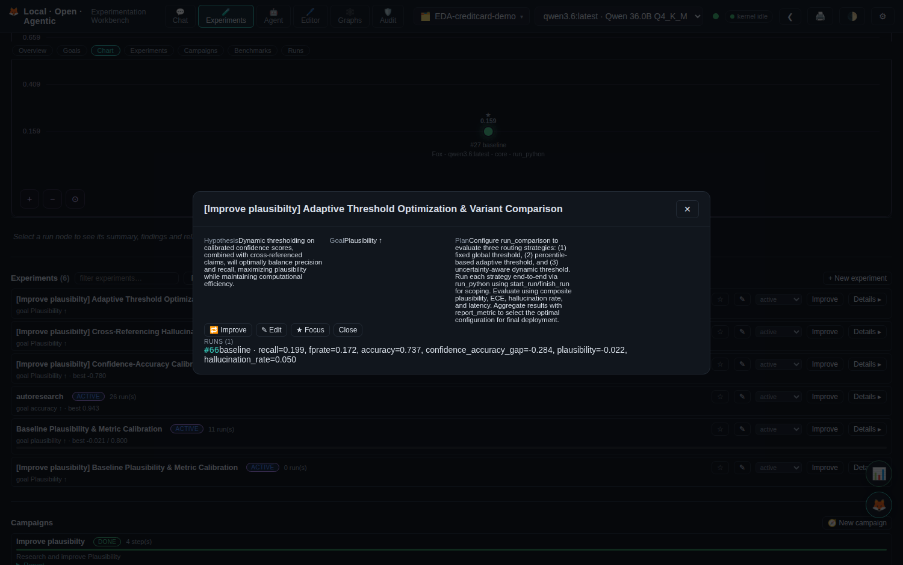
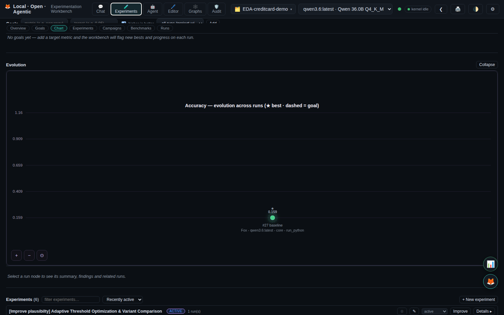
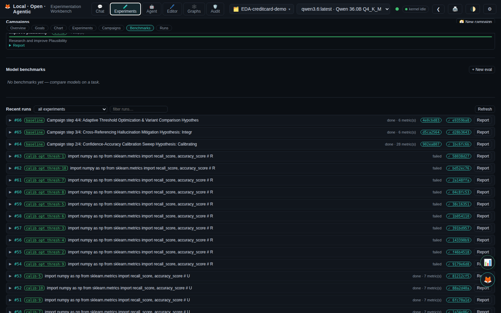
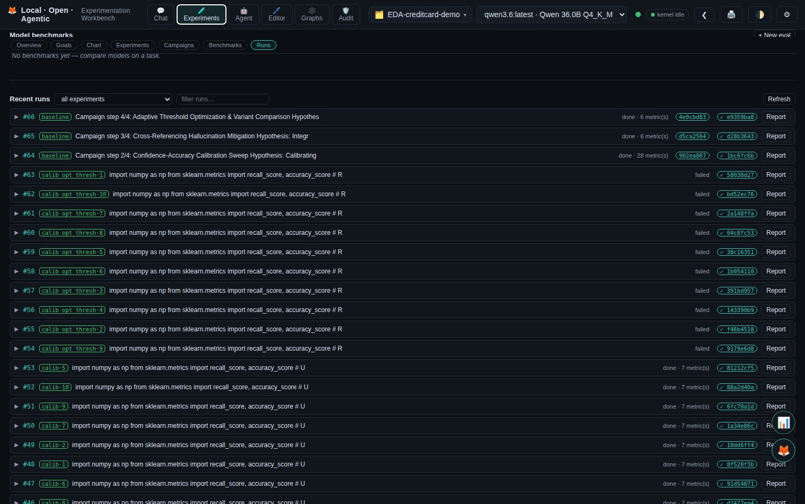
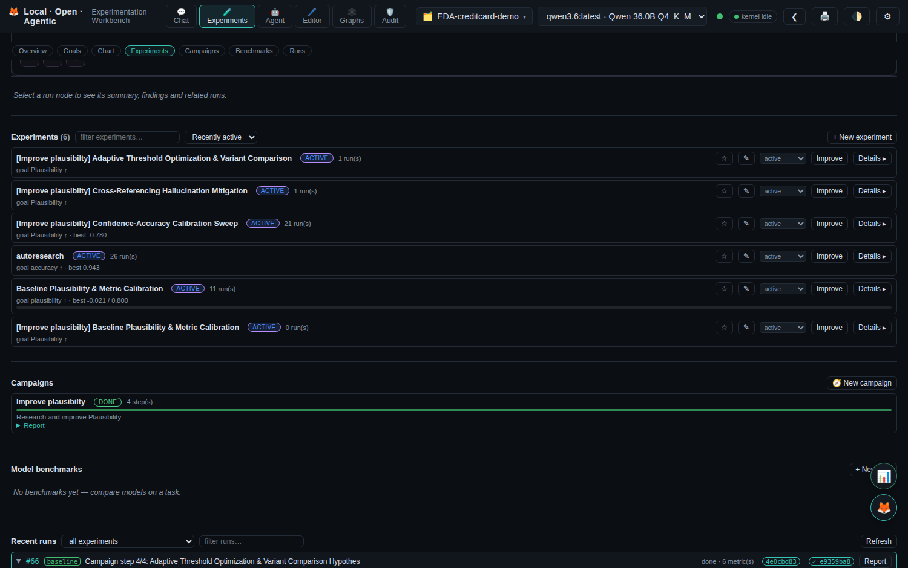
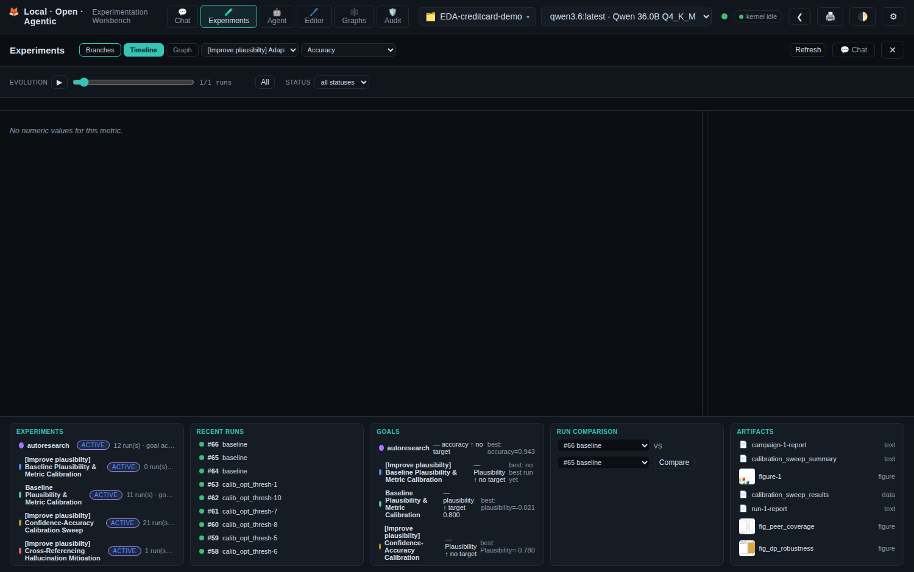
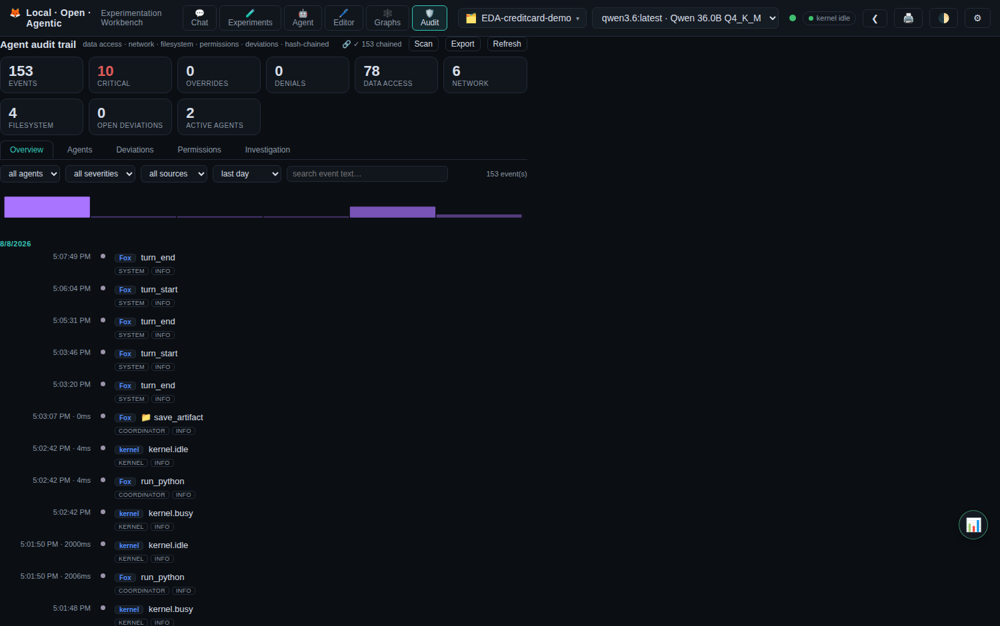

Experimentation Workbench — every feature and workflow in one colorful tour.
Every research program starts small — a dataset, a question, a first fit. This workbench is where that journey plays out end-to-end, on your own hardware. Open a session, drop in data, and ask Fox for a baseline regression; it runs the code on a persistent kernel, records the run with its exact code, environment, model and metrics, and a background reviewer suggests the next move. Push further with parameter sweeps, improve loops and background campaigns until you hit your target — then keep climbing, through model benchmarks and literature grounding, all the way to fine-tuning an LLM on your own data and proving the adapter beats the base model. Every step is tracked, verifiable, and audit-able. And nothing leaves your machine unless you explicitly approve it.
Agentic, chat-driven data science and machine learning — with every run captured and comparable.
It turns a conversation into a reproducible research program and closes the loop between running, reviewing, and learning.
A full local AI research stack in one browser tab, with an open MCP toolbox.
load data · EDA · a first linear fit
goal-first variants · sweeps · improve loop
leaderboards · learnings · run diffs
campaigns · benchmarks · proactive agenda
git lineage · integrity hashes · audit trail
LoRA/QLoRA on your data · base vs adapter
Streaming agent turns with provenance labels (model · MCP · action), message edit/retry/copy/delete, file attach, and inline schema cards.
Experiments with goal metric + target; every run records config, metrics, full code, environment, model, and integrity.
Edit objectives in place, set a focused experiment, and see distance-to-target + ✓ reached everywhere.
Run → review → apply best suggestion → rerun, bounded, with regression checks and learned outcomes.
run_sweep runs one code path across configs on parallel kernels — one run per config, real process-level parallelism.
Plan a multi-step study, execute each step as an experiment in the background, and get a synthesis report.
Run the same task under many LLMs (per-experiment model pinning) and get a ranked leaderboard.
Every measured outcome becomes a learning that feeds back into context, review, and planning — the workbench gets smarter.
Cross-experiment and campaign leaderboards, N-run side-by-side tables, and run diffs (config, tools, code).
Git-backed run lineage, restore-to-run, integrity hashes, and per-run audit — tamper-evident by design.
Planning, review, and reports consult the knowledge-graph RAG — related work with arXiv citations.
Redacted, hash-chained log of every tool call, permission decision, network access, and deviation.
One-click project report, next-research agenda, summary of findings, and a portable zip export.
Jupyter notebooks on the persistent kernel; figures become artifacts; runs tracked like any other.
Track experiments, campaigns, benchmarks, and learnings — and generate documentation — right in VS Code.
An agenda of open threads (below-target experiments, no-gain learnings, open goals) plus a proposed next campaign.
chat, attach files, @schema
tools + final reply, per-experiment model pinning
Python/R kernel, sweeps, notebooks, MCP, approvals
metrics, code, env, integrity, git commit
findings + suggestions with regression check
hypothesis, goal metric + target, plan
start_run / finish_run, report_metric
agent suggests up to 3 next changes
suggestion recorded, tracked, de-duped
✓ improved / ✗ no gain → a learning
target reached · no gain streak · budget
LLM plans steps, grounded in literature + learnings
runs in the background, streams live progress
best run recorded, lineage chained
durable resume point survives restart
posted to chat + saved as an artifact
prompt, model list, goal metric
pinned to that model
agent reports the goal metric
ranked by goal metric, best highlighted
every experiment run snapshotted to a management repo, commit hash stored on the run
canonical run record hashed; verify detects tampering
python + package versions captured at run time
redacted event log, tamper-evident
every tool call's source retained for diffs









Every tool call, permission decision, network access and filesystem touch is captured, redacted, and hash-chained (SHA-256, tamper-evident). A representative sample from the live trail:
{
"event_id": "01KZGYCCBPFD6W1JXDS03P0R0T",
"source": "coordinator",
"tool_name": "save_artifact",
"severity": "info",
"duration_ms": 0.48,
"network": false,
"filesystem": true,
"data_access": true
}
Each event is redacted (no secrets), references the previous event's hash, and can be
verified via verify_chain; each run carries an integrity hash and links to its audit trace.
The 🛡 Audit view adds per-agent history, permission-drift, deviation flags, and a searchable timeline.